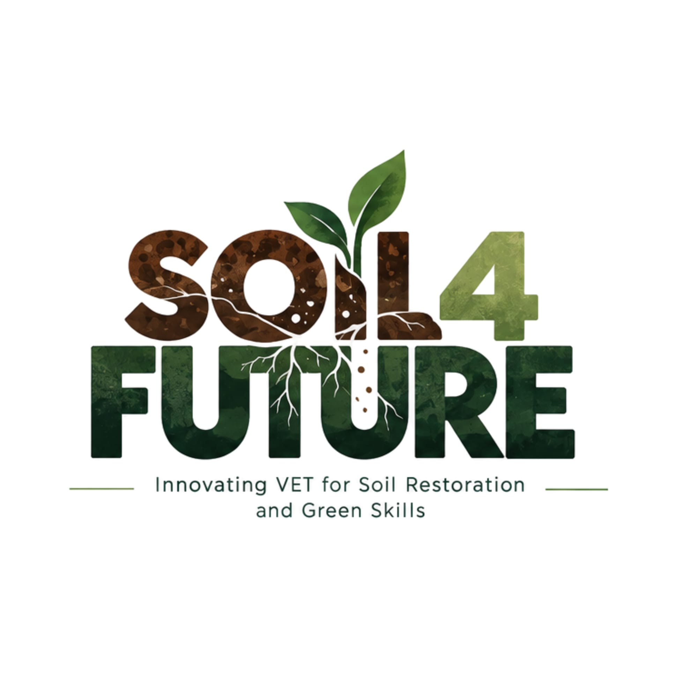

ERASMUS+ VET · GREEN SKILLSSOIL4FUTURE.
SOIL4FUTURE.
Innovating VET for soil restoration and green skills.
Un progetto Erasmus+ sulla rigenerazione del suolo e le competenze verdi, con strumenti di apprendimento digitale, metodologie interattive e gamification.
NUOVO PROGETTO
Suolo, formazione e innovazione digitale.
Qui 7Hub porta competenze di gamification, strumenti digitali, comunicazione e partecipazione all’interno di un progetto che guarda al suolo come tema educativo e professionale.
Durata2026–2028 · 26 mesi
Budget€ 250.000
Ruolo 7HubCoordinamento WP2
Attività chiaveGamification, sito, mappa digitale, piattaforma, evento finale

LA PARTE 7HUB
Non solo contenuti: esperienza, interazione e accessibilità.
7Hub contribuisce con competenze di gamification, comunicazione e strumenti digitali. Le attività di progetto sono in fase di realizzazione: i risultati verranno condivisi progressivamente.
Collegamento alla gamification